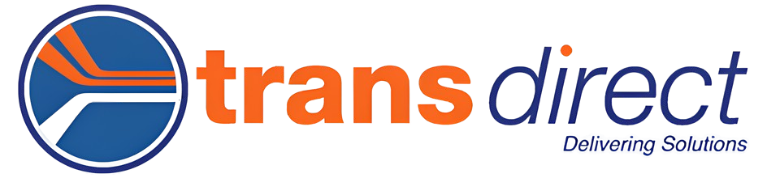

Location
We are currently hiring delivery drivers Australia wide!
Job Responsibilities
- Load/unload packages.
- Plan efficient delivery routes.
- Communicate with customers; obtain signatures.
- Maintain delivery records and process payments.
Qualifications
- Valid driver’s license and clean record.
- Ability to plan routes and follow directions.
- Communication skills and attention to detail.
Compensation
Join our team and be rewarded for your expertise and commitment. Compensation starts at a competitive rate of $75/hour, with generous scaling options based on experience, performance, and demand.
We value your time and dedication, which is why we provide additional incentives such as:
- Bonuses: Performance-based bonuses for exceeding targets or receiving exceptional client feedback.
- Flexibility Premium: Higher rates for taking on last-minute assignments or extended shifts.
- Retention Rewards: Quarterly and annual retention bonuses to recognize your ongoing contribution.
Application Process
- Application should only take 5-10 minutes to complete.
- Ensure all questions are answered honestly.
- Expect a decision within 1–2 business days.
Join Transdirect and play a key role in ensuring timely, efficient deliveries for our valued customers! We look forward to reviewing your application and welcoming you to our growing team.
Apply Now!